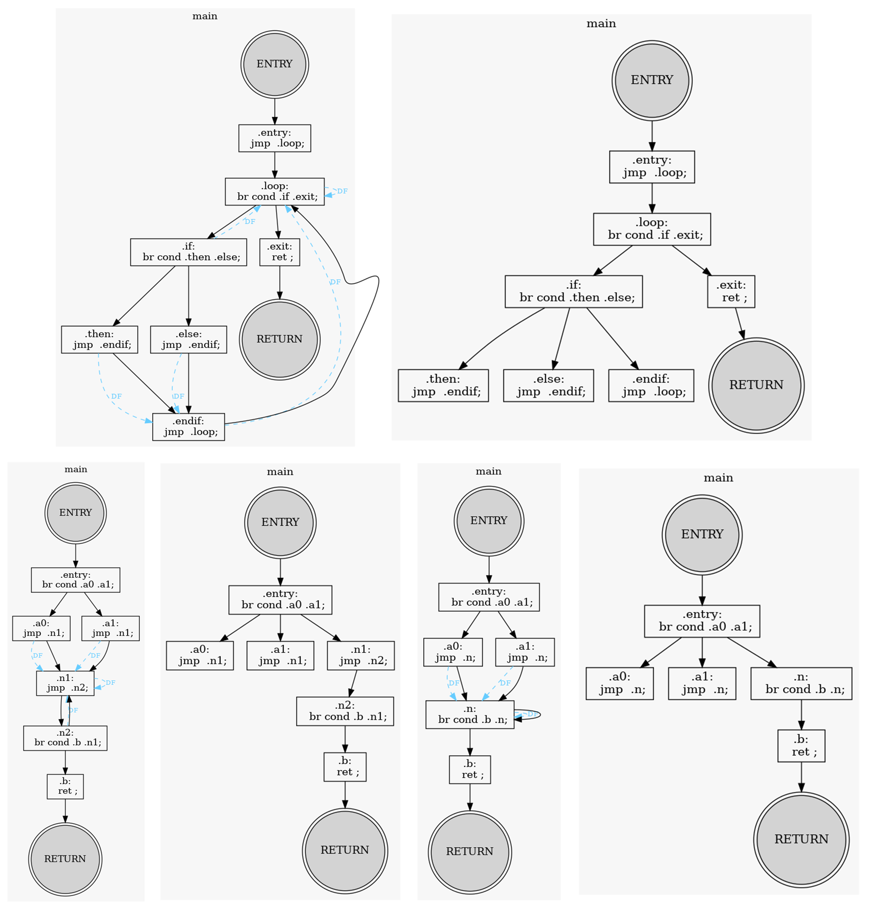
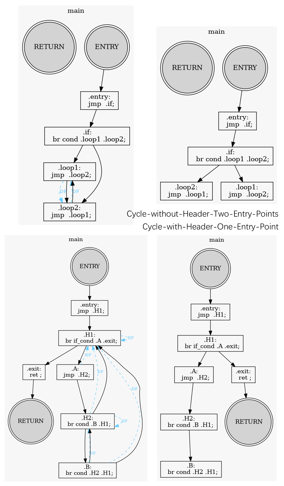
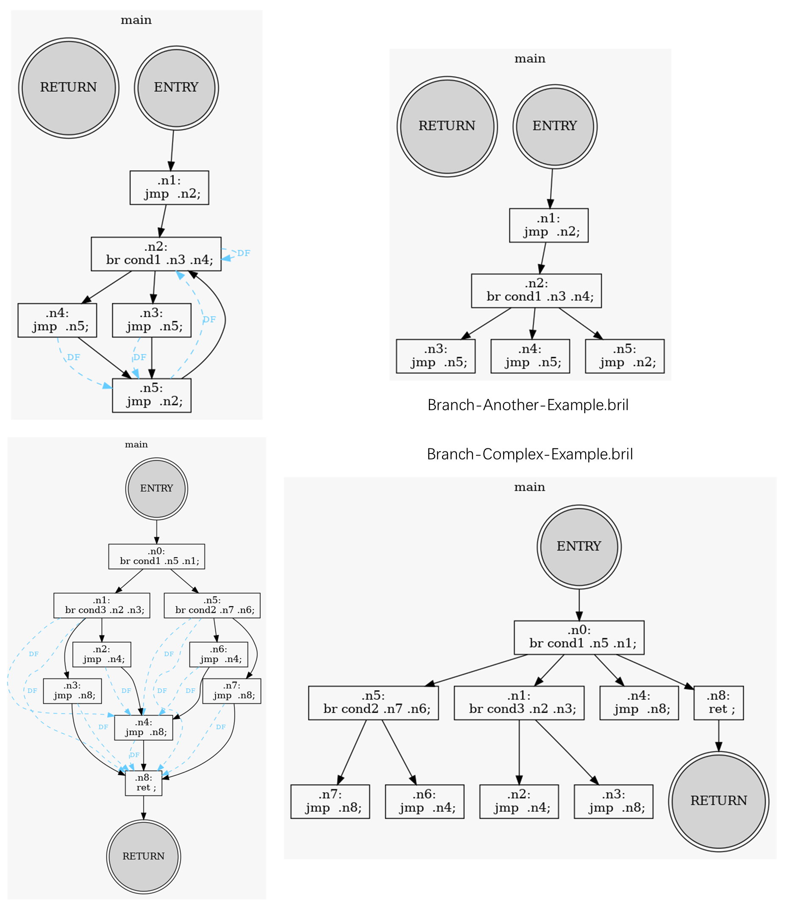
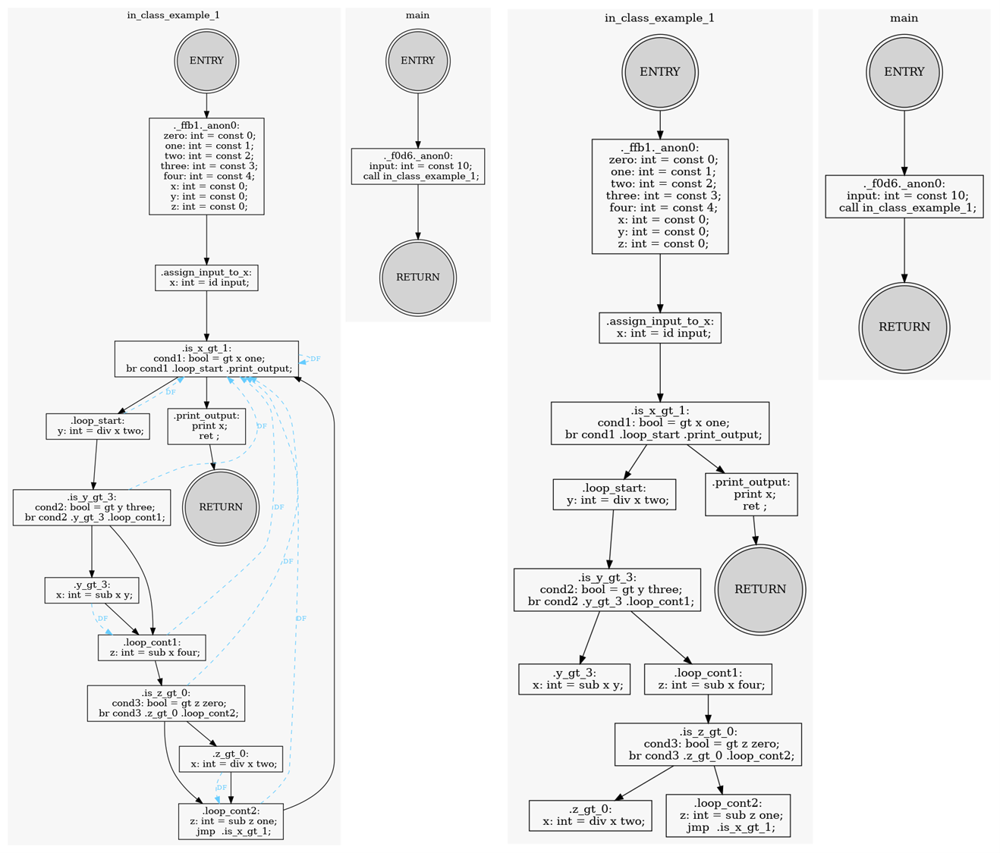

Homework 4: Dominance
Introduction
Understanding Dominance Analysis in Control Flow Graphs
Dominance analysis is a fundamental concept in compiler optimization, crucial for understanding the structure of control flow within programs. It involves identifying dominance relationships among blocks in a Control Flow Graph (CFG), where a program is broken down into basic blocks connected by directed edges representing the possible flow of execution. This analysis is often used for advanced compiler optimizations like code motion, dead code elimination, and Static Single Assignment (SSA) form conversion.
This blog post delves into the key concepts of dominance analysis, including dominators, immediate dominators, and dominance frontiers. These concepts form the basis of various control flow optimizations and transformations.
Key Concepts
Dominators
In a CFG, a block BB1 is said to dominate another block BB2 if every path from the entry block to BB2 must pass through BB1 . The entry block itself trivially dominates all other blocks in the graph because all execution paths must originate from it.
The concept of dominators can be useful to identify regions in the program where specific code fragments will always execute before others. This information is essential for optimizations such as moving invariant computations out of loops and removing unreachable code.
Immediate Dominators
Among the set of blocks that dominate a particular block, the one closest to in terms of control flow is known as its immediate dominator. The immediate dominator is unique for each block (except the entry block) and forms the basis of the dominator tree, a hierarchical structure that reveals the dominance relationships within the CFG.
In the dominator tree, each node represents a basic block, and an edge from BB1 to BB2 indicates that BB1 is the immediate dominator of BB2 . This tree structure helps in visualizing the control dependencies in a program.
Dominance Frontier
The dominance frontier of a block BB1 is the set of all blocks where the dominance relationship breaks. More formally, a block BBX is in the dominance frontier of BB1 if BB1 dominates a predecessor of BBX , but BB1 does not strictly dominate BBX itself.
Dominance frontiers are used to identify the points in the CFG where variables need to be merged or “phi-inserted” during SSA form conversion. This is important because it ensures that all possible values of a variable reaching a certain block are correctly accounted for.
Control Flow Graph and Dominance Analysis
In the context of compiler design, the CFG represents the program’s execution paths, with nodes corresponding to basic blocks and edges denoting control flow between them. Dominance analysis provides a way to understand the flow of control within a program by identifying how execution paths interact and where they converge or diverge.
The Role of Dominators in CFG
Dominators can be seen as checkpoints that ensure certain computations always happen before others. For example, if a block BB1 dominates BB2 , we can be certain that the execution of BB2 implies the execution of BB1 at some point. This property allows for optimizations such as moving loop-invariant computations out of loops, as the computations are guaranteed to occur before each iteration of the loop.
The Dominator Tree
The dominator tree provides a structured way to represent the dominance relationships within the CFG. By identifying the immediate dominator for each block, we can construct a tree where each block is a child of its immediate dominator. This structure is useful for identifying regions of code that are tightly coupled in terms of control flow, aiding in optimizations such as code motion and dead code elimination.
Understanding the Dominance Frontier
The dominance frontier is particularly useful in scenarios where multiple control paths converge. It helps identify the blocks where different execution paths must be reconciled, especially in the context of SSA form, where variables may have different values depending on the path taken to reach a block. By inserting “phi functions” at the dominance frontier, the compiler can correctly handle the merging of variable values from different paths.
Detail Design
Abstraction Classes
The abstraction class remain the same structure as last homework submittion, see detail in HW3 - Abstraction Classes.
I add one additional feature: __lt__() for class BrilInstruction_Label, therefore use current ./bril_model for further development.
Dominance Analysis Implementation
The script dom_analysis.py is designed to perform dominance analysis on Bril program. It includes functionalities for generating a Control Flow Graph (CFG), computing dominators for each block, constructing the dominator tree, and identifying the dominance frontier. Below is a breakdown of the key parts of the code with brief notes on their functions and corresponding source code line indxx.
1. Imports and Argument Parsing
- The code imports necessary libraries like
os,networkx,pyvis, andmatplotlibfor graph visualization, as well as custom modules frombril_model. - It also sets up argument parsing to allow the user to specify the Bril file to analyze and an optional save directory for generated outputs.
ℹ️ View source code : EECE7398_ST_Compiler/HW4/dom_analysis.py @ 582ec4a.
# %% [markdown]
# # Playground - data flow graph
# %%
import os
import networkx as nx
import pyvis as pv
import matplotlib.pyplot as plt
import graphviz as gv
from typing import Iterable, Tuple, Set, List, Dict, OrderedDict, Optional
import bril_model as bm
from bril_model.form_blocks import form_blocks
from hashlib import sha256
fast_hash = lambda str: sha256(str).hexdigest()[:3]
# usage: <this_script> DEMO_BRIL_FILE [--save-dir=./save | --mute-output]
import argparse
parser = argparse.ArgumentParser(description='Generate CFG with dominance frontier and Dominator-Tree for a bril script')
parser.add_argument('DEMO_BRIL_FILE', type=str, help='Path to the bril file')
parser.add_argument('--save-dir', type=str, default='./save', help='Path to save the generated html files')
parser.add_argument('--mute-output', action='store_true', help='Mute the output of the graphviz render', default=False)
args = parser.parse_args()
DEMO_BRIL_FILE = args.DEMO_BRIL_FILE
SAVE_DIR = args.save_dir
MUTE_OUTPUT = args.mute_output
# DEMO_BRIL_FILE = "../bril/examples/test/dom/loopcond.bril"
# DEMO_BRIL_FILE = "../bril/examples/test/dom/while.bril"
# %%
# make sure args are allowed
args_correct = True
if not os.path.exists(DEMO_BRIL_FILE):
print(f"File <{DEMO_BRIL_FILE}> not found")
args_correct = False
if not args_correct:
# print help and exit
parser.print_help()
exit(1)
# %%
ENTRY_POINT_NAME = 'ENTRY'
RETURN_POINT_NAME = 'RETURN' 2. Basic Block Definition
- This section defines the
BasicBlockclass, representing a basic block in the CFG. Each basic block consists of a label and a list of instructions. - It also includes properties for successors (
succ) and predecessors (pred), which form the edges in the CFG. - The class implements various methods for equality checks, hashing, and string representation.
ℹ️ View source code : EECE7398_ST_Compiler/HW4/dom_analysis.py @ 582ec4a.
class BasicBlock():
def __init__(self, label: bm.BrilInstruction_Label, instrs: List[bm.BrilInstruction]):
if not isinstance(label, bm.BrilInstruction_Label):
raise TypeError(f"Expected label, got {type(label)}")
if label not in instrs:
instrs.insert(0, label)
self.instrs = instrs
self.succ: Set[BasicBlock] = set()
self.pred: Set[BasicBlock] = set()
@property
def label(self):
return self.instrs[0]
def __hash__(self) -> int:
return hash(self.label)
def __eq__(self, o: object) -> bool:
if not isinstance(o, BasicBlock):
return False
return self.label == o.label
def __lt__(self, o: object) -> bool:
if not isinstance(o, BasicBlock):
return False
# return block is always the last one
if self.label.label == RETURN_POINT_NAME: return False
if o.label.label == RETURN_POINT_NAME: return True
# entry block is always the first one
if self.label.label == ENTRY_POINT_NAME: return True
if o.label.label == ENTRY_POINT_NAME: return False
return self.label < o.label
def __str__(self):
if self.label.label in {ENTRY_POINT_NAME, RETURN_POINT_NAME}: return self.label.label
_instrs = '\n '.join([x.to_briltxt() for x in self.instrs[1:]])
if _instrs:
_instrs = f"\n {_instrs}"
return f"{self.label.to_briltxt()}{_instrs}"
def __repr__(self):
return f"{self.__class__.__name__} :: {self.label.to_briltxt()}..[{len(self.instrs) - 1}]" 3. Forming Basic Blocks from Bril Functions
- The function
iter_func_blocksgenerates basic blocks from the provided Bril script by iterating over each function in the script and forming blocks based on instruction labels. - For functions without explicit labels, it creates anonymous basic blocks.
ℹ️ View source code : EECE7398_ST_Compiler/HW4/dom_analysis.py @ 582ec4a.
def iter_func_blocks(bs: bm.BrilScript) -> Iterable[Tuple[bm.BrilFunction, List[BasicBlock]]]:
for each_func in bs.functions:
bbs: List[BasicBlock] = list()
anonymous_id = 0
for each_block in form_blocks(each_func.instrs):
this_block_label: bm.BrilInstruction_Label = None
if isinstance(each_block[0], bm.BrilInstruction_Label):
this_block_label = each_block[0]
else:
this_block_label = bm.BrilInstruction_Label(dict(label='_f{}._anon{}'.format(fast_hash(each_func.name.encode()), anonymous_id)))
anonymous_id += 1
bbs.append(BasicBlock(this_block_label, each_block))
yield (each_func, bbs) 4. Generating the CFG
- The
generate_func_cfg_dictfunction builds the CFG by establishing the control flow between basic blocks. It addsentryandreturnblocks to represent the start and end points of a function. - It iterates over the blocks and updates the predecessors and successors based on control flow instructions (
jmp,br,ret).
ℹ️ View source code : EECE7398_ST_Compiler/HW4/dom_analysis.py @ 582ec4a.
def generate_func_cfg_dict(bscript: bm.BrilScript) -> Dict[bm.BrilFunction, List[BasicBlock]]:
app_bbs_dict: OrderedDict[bm.BrilFunction, List[BasicBlock]] = {}
for each_func, basic_blocks in iter_func_blocks(bscript):
# print("Function: {}".format(each_func.name))
entry_bb = BasicBlock(bm.BrilInstruction_Label(dict(label=ENTRY_POINT_NAME)), [])
return_bb = BasicBlock(bm.BrilInstruction_Label(dict(label=RETURN_POINT_NAME)), [])
prev_bb: Optional[BasicBlock] = None
is_first: bool = True
for each_bb in basic_blocks:
if prev_bb:
# reason: fallthrough edge
prev_bb.succ.add(each_bb)
each_bb.pred.add(prev_bb)
elif is_first:
# reason: entry edge
entry_bb.succ.add(each_bb)
each_bb.pred.add(entry_bb)
is_first = False
# get last instruction if exists
final_instr = each_bb.instrs[-1] if each_bb.instrs else None
if final_instr is None:
# empty block, skip
prev_bb = each_bb
elif final_instr.op in ['jmp', 'br']:
# reaching control flow instruction
for redirect_instr_to_bb_label in final_instr.labels:
next_bb = next((bb for bb in basic_blocks if bb.label.label == redirect_instr_to_bb_label), None)
if next_bb is None:
raise ValueError(f"Cannot find block with label {redirect_instr_to_bb_label}")
# reason: control flow edge
each_bb.succ.add(next_bb)
next_bb.pred.add(each_bb)
prev_bb = None
elif final_instr.op in ['ret']:
# reaching return instruction
# reason: return edge
each_bb.succ.add(return_bb)
return_bb.pred.add(each_bb)
prev_bb = None
# explicit return block, no fallthrough
else:
# normal instruction, prepare for fallthrough
prev_bb = each_bb
# check if last block has no fallthrough
if prev_bb:
# reason: return edge
prev_bb.succ.add(return_bb)
return_bb.pred.add(prev_bb)
# add entry/return block
basic_blocks.insert(0, entry_bb)
basic_blocks.append(return_bb)
app_bbs_dict[each_func] = basic_blocks
return app_bbs_dict 5. Computing Dominators
- The
generate_dom_dictfunction calculates the dominators for each block using an iterative fixed-point algorithm. - Initially, every block is assumed to dominate itself and all others. The algorithm repeatedly refines the dominator sets by intersecting the dominator sets of each block’s predecessors.
ℹ️ View source code : EECE7398_ST_Compiler/HW4/dom_analysis.py @ 582ec4a.
def generate_dom_dict(bbs: List[BasicBlock]) -> dict[BasicBlock, set[BasicBlock]]:
# Initialize dominator sets for each block
# Initially, every block dominates every other block
dom: Dict[BasicBlock, Set[BasicBlock]] = {bb: set(bbs) for bb in bbs}
# The entry block only dominates itself
bb_entry = getBasicBlockByLabel(bbs, ENTRY_POINT_NAME)
dom[bb_entry] = set([bb_entry])
changed: bool = True
while changed:
changed = False
for each_bb in bbs:
if each_bb == bb_entry: continue
# The dominator set of a bb is the intersection of the dominator sets of its predecessors
this_bb_dom = set.intersection(*[dom[each_pred] for each_pred in each_bb.pred] or [set()])
# The dominator set of a bb should includes itself
this_bb_dom.add(each_bb)
# Update if changed
if dom[each_bb] != this_bb_dom:
dom[each_bb] = this_bb_dom
changed = True
return dom 6. Immediate Dominator Calculation
- The
get_lease_superset_domfunction identifies the immediate dominator for a given block by finding the closest dominator in the dominator set.
ℹ️ View source code : EECE7398_ST_Compiler/HW4/dom_analysis.py @ 582ec4a.
# get the last dom of a given block
def get_lease_superset_dom(dom_dict: dict[BasicBlock, set[BasicBlock]], bb: BasicBlock) -> Optional[BasicBlock]:
return next((test_dom for test_dom in dom_dict[bb] if ((dom_dict[bb] - dom_dict[test_dom]) == set([bb]))), None) 7. Dominance Frontier Computation
- The
get_dom_frontierfunction determines the dominance frontier for a given block. It checks blocks where the dominance relationship changes based on control flow.
ℹ️ View source code : EECE7398_ST_Compiler/HW4/dom_analysis.py @ 582ec4a.
# get the dom frontiers of a given block. (One-liner version, the well-commented version is hidden in previous commits)
def get_dom_frontier(dom: Dict[BasicBlock, Set[BasicBlock]], bb: BasicBlock) -> Set[BasicBlock]:
return set([test_with_bb for test_with_bb in dom.keys() if (bb not in dom[test_with_bb] or bb == test_with_bb) and (bb in set.union(*[dom[each_tbp] for each_tbp in test_with_bb.pred] or [set()]))]) 8. Graph Visualization
- The code includes helper functions for generating graph visualizations using
Graphviz. The functionscreate_graphviz_dot_nodeandcreate_graphviz_dot_edgecreate nodes and edges for the CFG and dominator tree graphs. - The
create_graphviz_dotfunction produces separate visualizations for the CFG and dominator tree.
ℹ️ View source code : EECE7398_ST_Compiler/HW4/dom_analysis.py @ 582ec4a.
def create_graphviz_dot(app_graph: Dict[bm.BrilFunction, List[BasicBlock]]) -> Tuple[gv.Digraph, gv.Digraph]:
dot_cfg = gv.Digraph('CFG', comment='Control Flow Graph')
dot_domt = gv.Digraph('DOMTREE', comment='Dominator Tree')
for each_func, bbs in app_graph.items():
_func_show_str = str(each_func).replace('\t', ' ')
print(f" {_func_show_str} ".center(80, '='))
dom = generate_dom_dict(bbs)
_max_bb_label_len = max([len(bb.label.label) for bb in bbs])
# each func is a subgraph
with dot_cfg.subgraph(name=f"cluster_{each_func.name}") as dot_cfg_func, dot_domt.subgraph(name=f"cluster_{each_func.name}") as dot_domt_func:
dot_cfg_func.attr(label=each_func.name)
dot_cfg_func.attr(color='#f7f7f7')
dot_cfg_func.attr(style='filled')
dot_cfg_func.attr(rankdir='TB')
dot_domt_func.attr(label=each_func.name)
dot_domt_func.attr(color='#f7f7f7')
dot_domt_func.attr(style='filled')
dot_domt_func.attr(rankdir='TB')
print(" Dom-Front ".center(80, '-'))
# generate cfg dot graph
for each_bb in bbs:
dom_frontiers = get_dom_frontier(dom, each_bb)
print(f"{each_bb.label.label.ljust(_max_bb_label_len)} : {', '.join([x.label.label for x in sorted(dom_frontiers)])}")
create_graphviz_dot_node(dot_cfg_func, each_func, each_bb)
for each_df in dom_frontiers:
create_graphviz_dot_edge(dot_cfg_func, each_func, each_bb, each_df, style='dashed', color='#66ccff', label='DF', fontsize='10', fontcolor='#66ccff', constraint='false')
for each_succ in each_bb.succ:
create_graphviz_dot_edge(dot_cfg_func, each_func, each_bb, each_succ)
# generate domt dot graph
print(" Dom & Dom-Tree ".center(80, '-'))
for each_bb in dom.keys():
least_superset_dom = get_lease_superset_dom(dom, each_bb)
print(f"{each_bb.label.label.ljust(_max_bb_label_len)} <- {(least_superset_dom.label.label if least_superset_dom else '[ROOT]').ljust(_max_bb_label_len)} : {', '.join([x.label.label for x in sorted(dom[each_bb])])}")
create_graphviz_dot_node(dot_domt_func, each_func, each_bb)
if least_superset_dom:
create_graphviz_dot_edge(dot_domt_func, each_func, least_superset_dom, each_bb)
# print the script in briltxt format for reference
print(" Script ".center(80, '-'))
for each_bb in bbs:
for each_instr in each_bb.instrs:
print( ("" if isinstance(each_instr, bm.BrilInstruction_Label) else " ") + each_instr.to_briltxt())
print()
return dot_cfg, dot_domt 9. Main Execution
- The script loads the specified Bril file and constructs the CFG for the functions in the script.
- It then generates the dot files for the CFG and dominator tree, saving them in the specified directory.
ℹ️ View source code : EECE7398_ST_Compiler/HW4/dom_analysis.py @ 582ec4a.
# %%
# load the bril script
bscript = bm.BrilScript(script_name=os.path.basename(DEMO_BRIL_FILE), file_dir=os.path.dirname(DEMO_BRIL_FILE))
print(bscript)
app_graph: Dict[bm.BrilFunction, List[BasicBlock]] = generate_func_cfg_dict(bscript)
# print("Functions: {}".format(', '.join([f"[{idx}]={x.name}" for idx, x in enumerate(app_graph.keys())])))
print()
dot_cfg, dot_domt = create_graphviz_dot(app_graph)
if MUTE_OUTPUT:
exit(0)
# Finally, create the save directory if not exists, and save the generated dot files
if not os.path.exists(SAVE_DIR):
os.makedirs(SAVE_DIR)
_gv_ret = dot_cfg.render(os.path.join(SAVE_DIR, bscript.script_name+".cfg.gv"), view=False)
print(_gv_ret)
_gv_ret = dot_domt.render(os.path.join(SAVE_DIR, bscript.script_name+".domt.gv"), view=False)
print(_gv_ret) Integration and Testing
The integration and testing phase focuses on verifying the correctness of the dominance analysis by evaluating its results against various test cases. The goal is to ensure that the dominance rules defined in the dominator tree are upheld for different basic block execution paths. This involves checking if any execution sequence violates the dominance relationships established by the analysis. To achieve this, the following steps are used:
- General Testing Approach:
- The basic and general idea of verification is to iterate over all possible paths of execution in the Control Flow Graph (CFG) and validate the dominance properties. Specifically, we ensure that if block
BB1dominates blockBB2, then any execution path reachingBB2must pass throughBB1. - For each basic block, we confirm that its set of dominators conforms to the expectations as derived from the dominator tree.
- The results are compared against reference outputs from well-understood examples discussed in class, as well as other edge cases designed to stress test the analysis.
- All analysis output are checked manually, and stored as the golden snapshot using
turnttoolchain. To test any modification, use commandmake turntto submit a fast check if anything have changed.
- The basic and general idea of verification is to iterate over all possible paths of execution in the Control Flow Graph (CFG) and validate the dominance properties. Specifically, we ensure that if block
- Test Cases:
- To thoroughly validate the implementation, several test cases in
.brilformat are used, which cover a variety of CFG structures. These include:- Branching and Merging: Simple branches where different paths converge into a single block. This tests if the dominance frontier is correctly identified.
- Loop Structures:
- Natural Loops: A basic loop where the execution repeatedly returns to the entry point. This checks if the analysis can handle back edges correctly.
- Cross Loops: Where multiple loops share a common point, testing the algorithm’s handling of intertwined control flows.
- Self-Loops: Where a block jumps to itself, testing the edge case of dominance with cyclic behavior.
- Complex Branches: Multi-level branching scenarios that test cascading decision-making processes.
- Select Cases with Fallthrough: A switch-like structure where control can fall through to subsequent cases, testing non-trivial flow paths.
- Cycle with/without Header: Examining cases where cycles may or may not have a designated entry block, testing the analysis of entry points and loop headers.
- Multiple Entry Points: CFGs with more than one entry point, challenging the assumptions about where execution begins.
- To thoroughly validate the implementation, several test cases in
- Testing Execution:
- Each test case is analyzed using the implemented dominance utilities, and the results are compared against expected outputs derived manually or from reference solutions provided in class.
- The verification process involves:
- Dominators Check: Ensuring that for each block
BB1, its dominator set only contains blocks that dominateBB1as per the expected results. - Immediate Dominators Check: Validating the immediate dominator for each block against the reference dominator tree structure.
- Dominance Frontier Check: Confirming that the dominance frontier of each block matches the expected set of blocks where the dominance relationship changes.
- Dominators Check: Ensuring that for each block
Results and Analysis
👉 Check HERE to see all graphical testcase results.
The analysis results demonstrate the correctness and robustness of the dominance utilities. The generated dominance information (dominator sets, dominator tree, and dominance frontier) matches the expected results for all test cases. Below is a summary of the findings:
- Branching and Merging:
- The dominance analysis correctly identifies the blocks that dominate each branch and accurately determines the dominance frontiers where paths converge. 
ℹ️ View log : Natural-Loops.golden-log @ 16fcb67.
BrilScript :: Natural-Loops.bril <1 func> @ example/in_class_example_dom
================ BrilFunction :: main ( ) -> None: <14 instr> ================
---------------------------------- Dom-Front -----------------------------------
ENTRY :
entry :
loop : loop
if : loop
then : endif
else : endif
endif : loop
exit :
RETURN :
-------------------------------- Dom & Dom-Tree --------------------------------
ENTRY <- [ROOT] : ENTRY
entry <- ENTRY : ENTRY, entry
loop <- entry : ENTRY, entry, loop
if <- loop : ENTRY, entry, if, loop
then <- if : ENTRY, entry, if, loop, then
else <- if : ENTRY, else, entry, if, loop
endif <- if : ENTRY, endif, entry, if, loop
exit <- loop : ENTRY, entry, exit, loop
RETURN <- exit : ENTRY, entry, exit, loop, RETURN
------------------------------------ Script ------------------------------------
.ENTRY:
.entry:
jmp .loop;
.loop:
br cond .if .exit;
.if:
br cond .then .else;
.then:
jmp .endif;
.else:
jmp .endif;
.endif:
jmp .loop;
.exit:
ret ;
.RETURN: - Loop Structures:
- Natural Loops: The algorithm successfully handles back edges and identifies the loop entry points as dominators for the loop body.
- Cross Loops and Multiple Entry Points: The implementation accurately distinguishes between blocks that dominate each shared section, even when the control flow is complex.
- Self-Loops: Dominance analysis treats the block as dominating itself, which is correctly identified in the results. 
ℹ️ View log : Cycle-with-Header-One-Entry-Point.golden-log @ 16fcb67.
BrilScript :: Cycle-with-Header-One-Entry-Point.bril <1 func> @ example/in_class_example_dom
================ BrilFunction :: main ( ) -> None: <12 instr> ================
---------------------------------- Dom-Front -----------------------------------
ENTRY :
entry :
H1 : H1
A : H1
H2 : H1, H2
B : H1, H2
exit :
RETURN :
-------------------------------- Dom & Dom-Tree --------------------------------
ENTRY <- [ROOT] : ENTRY
entry <- ENTRY : ENTRY, entry
H1 <- entry : ENTRY, H1, entry
A <- H1 : ENTRY, A, H1, entry
H2 <- A : ENTRY, A, H1, H2, entry
B <- H2 : ENTRY, A, B, H1, H2, entry
exit <- H1 : ENTRY, H1, entry, exit
RETURN <- exit : ENTRY, H1, entry, exit, RETURN
------------------------------------ Script ------------------------------------
.ENTRY:
.entry:
jmp .H1;
.H1:
br if_cond .A .exit;
.A:
jmp .H2;
.H2:
br cond .B .H1;
.B:
br cond .H2 .H1;
.exit:
ret ;
.RETURN: ℹ️ View log : Cycle-without-Header-Two-Entry-Points.golden-log @ 16fcb67.
BrilScript :: Cycle-without-Header-Two-Entry-Points.bril <1 func> @ example/in_class_example_dom
================ BrilFunction :: main ( ) -> None: <8 instr> =================
---------------------------------- Dom-Front -----------------------------------
ENTRY :
entry :
if :
loop2 : loop1
loop1 : loop2
RETURN :
-------------------------------- Dom & Dom-Tree --------------------------------
ENTRY <- [ROOT] : ENTRY
entry <- ENTRY : ENTRY, entry
if <- entry : ENTRY, entry, if
loop2 <- if : ENTRY, entry, if, loop2
loop1 <- if : ENTRY, entry, if, loop1
RETURN <- [ROOT] : RETURN
------------------------------------ Script ------------------------------------
.ENTRY:
.entry:
jmp .if;
.if:
br cond .loop1 .loop2;
.loop2:
jmp .loop1;
.loop1:
jmp .loop2;
.RETURN: - Complex Branches and Fallthrough Cases:
- For cases with multiple branches and fallthrough behavior, the dominance frontier calculation correctly identifies the regions where the execution paths merge.
- This indicates that the implementation can handle cases where control flow does not follow a simple pattern, such as switch statements with fallthrough. 
ℹ️ View log : Branch-Another-Example.golden-log @ 16fcb67.
BrilScript :: Branch-Another-Example.bril <1 func> @ example/in_class_example_dom
================ BrilFunction :: main ( ) -> None: <10 instr> ================
---------------------------------- Dom-Front -----------------------------------
ENTRY :
n1 :
n2 : n2
n3 : n5
n4 : n5
n5 : n2
RETURN :
-------------------------------- Dom & Dom-Tree --------------------------------
ENTRY <- [ROOT] : ENTRY
n1 <- ENTRY : ENTRY, n1
n2 <- n1 : ENTRY, n1, n2
n3 <- n2 : ENTRY, n1, n2, n3
n4 <- n2 : ENTRY, n1, n2, n4
n5 <- n2 : ENTRY, n1, n2, n5
RETURN <- [ROOT] : RETURN
------------------------------------ Script ------------------------------------
.ENTRY:
.n1:
jmp .n2;
.n2:
br cond1 .n3 .n4;
.n3:
jmp .n5;
.n4:
jmp .n5;
.n5:
jmp .n2;
.RETURN: ℹ️ View log : Branch-Complex-Example.golden-log @ 16fcb67.
BrilScript :: Branch-Complex-Example.bril <1 func> @ example/in_class_example_dom
================ BrilFunction :: main ( ) -> None: <18 instr> ================
---------------------------------- Dom-Front -----------------------------------
ENTRY :
n0 :
n5 : n4, n8
n1 : n4, n8
n7 : n8
n6 : n4
n2 : n4
n4 : n8
n3 : n8
n8 :
RETURN :
-------------------------------- Dom & Dom-Tree --------------------------------
ENTRY <- [ROOT] : ENTRY
n0 <- ENTRY : ENTRY, n0
n5 <- n0 : ENTRY, n0, n5
n1 <- n0 : ENTRY, n0, n1
n7 <- n5 : ENTRY, n0, n5, n7
n6 <- n5 : ENTRY, n0, n5, n6
n2 <- n1 : ENTRY, n0, n1, n2
n4 <- n0 : ENTRY, n0, n4
n3 <- n1 : ENTRY, n0, n1, n3
n8 <- n0 : ENTRY, n0, n8
RETURN <- n8 : ENTRY, n0, n8, RETURN
------------------------------------ Script ------------------------------------
.ENTRY:
.n0:
br cond1 .n5 .n1;
.n5:
br cond2 .n7 .n6;
.n1:
br cond3 .n2 .n3;
.n7:
jmp .n8;
.n6:
jmp .n4;
.n2:
jmp .n4;
.n4:
jmp .n8;
.n3:
jmp .n8;
.n8:
ret ;
.RETURN: - Other Edge Cases:
- Tests involving cycles without a clear header, and cases with two or more entry points, show that the analysis correctly computes dominators based on the actual paths from any entry to each block.
- The results reveal that the dominance utilities can generalize beyond typical loop constructs, making them suitable for analyzing diverse control flow patterns.
- Other Real Benchmarks: 
ℹ️ View log : in_class_example_1.golden-log @ 16fcb67.
BrilScript :: in_class_example_1.bril <2 func> @ example/in_class_example_df
==== BrilFunction :: in_class_example_1 ( input<int> ) -> None: <33 instr> ====
---------------------------------- Dom-Front -----------------------------------
ENTRY :
_ffb1._anon0 :
assign_input_to_x :
is_x_gt_1 : is_x_gt_1
loop_start : is_x_gt_1
is_y_gt_3 : is_x_gt_1
y_gt_3 : loop_cont1
loop_cont1 : is_x_gt_1
is_z_gt_0 : is_x_gt_1
z_gt_0 : loop_cont2
loop_cont2 : is_x_gt_1
print_output :
RETURN :
-------------------------------- Dom & Dom-Tree --------------------------------
ENTRY <- [ROOT] : ENTRY
_ffb1._anon0 <- ENTRY : ENTRY, _ffb1._anon0
assign_input_to_x <- _ffb1._anon0 : ENTRY, _ffb1._anon0, assign_input_to_x
is_x_gt_1 <- assign_input_to_x : ENTRY, _ffb1._anon0, assign_input_to_x, is_x_gt_1
loop_start <- is_x_gt_1 : ENTRY, _ffb1._anon0, assign_input_to_x, is_x_gt_1, loop_start
is_y_gt_3 <- loop_start : ENTRY, _ffb1._anon0, assign_input_to_x, is_x_gt_1, is_y_gt_3, loop_start
y_gt_3 <- is_y_gt_3 : ENTRY, _ffb1._anon0, assign_input_to_x, is_x_gt_1, is_y_gt_3, loop_start, y_gt_3
loop_cont1 <- is_y_gt_3 : ENTRY, _ffb1._anon0, assign_input_to_x, is_x_gt_1, is_y_gt_3, loop_cont1, loop_start
is_z_gt_0 <- loop_cont1 : ENTRY, _ffb1._anon0, assign_input_to_x, is_x_gt_1, is_y_gt_3, is_z_gt_0, loop_cont1, loop_start
z_gt_0 <- is_z_gt_0 : ENTRY, _ffb1._anon0, assign_input_to_x, is_x_gt_1, is_y_gt_3, is_z_gt_0, loop_cont1, loop_start, z_gt_0
loop_cont2 <- is_z_gt_0 : ENTRY, _ffb1._anon0, assign_input_to_x, is_x_gt_1, is_y_gt_3, is_z_gt_0, loop_cont1, loop_cont2, loop_start
print_output <- is_x_gt_1 : ENTRY, _ffb1._anon0, assign_input_to_x, is_x_gt_1, print_output
RETURN <- print_output : ENTRY, _ffb1._anon0, assign_input_to_x, is_x_gt_1, print_output, RETURN
------------------------------------ Script ------------------------------------
.ENTRY:
._ffb1._anon0:
zero: int = const 0;
one: int = const 1;
two: int = const 2;
three: int = const 3;
four: int = const 4;
x: int = const 0;
y: int = const 0;
z: int = const 0;
.assign_input_to_x:
x: int = id input;
.is_x_gt_1:
cond1: bool = gt x one;
br cond1 .loop_start .print_output;
.loop_start:
y: int = div x two;
.is_y_gt_3:
cond2: bool = gt y three;
br cond2 .y_gt_3 .loop_cont1;
.y_gt_3:
x: int = sub x y;
.loop_cont1:
z: int = sub x four;
.is_z_gt_0:
cond3: bool = gt z zero;
br cond3 .z_gt_0 .loop_cont2;
.z_gt_0:
x: int = div x two;
.loop_cont2:
z: int = sub z one;
jmp .is_x_gt_1;
.print_output:
print x;
ret ;
.RETURN:
================ BrilFunction :: main ( ) -> None: <2 instr> =================
---------------------------------- Dom-Front -----------------------------------
ENTRY :
_f0d6._anon0 :
RETURN :
-------------------------------- Dom & Dom-Tree --------------------------------
ENTRY <- [ROOT] : ENTRY
_f0d6._anon0 <- ENTRY : ENTRY, _f0d6._anon0
RETURN <- _f0d6._anon0 : ENTRY, _f0d6._anon0, RETURN
------------------------------------ Script ------------------------------------
.ENTRY:
._f0d6._anon0:
input: int = const 10;
call in_class_example_1;
.RETURN: * Check HERE to see all graphical test case results. ** Check HERE to see all golden snapshots.
Conclusion
Dominance analysis is a key part of CFG-based optimizations in compilers. It involves: - Identifying dominators to understand the flow of control. - Using the immediate dominator to build the dominator tree. - Computing the dominance frontier to manage variable merging.
These concepts enable powerful optimizations and transformations that improve program efficiency and correctness. In the following sections, we will explore how to implement dominance analysis in a compiler framework, test the correctness of the results, and apply these concepts to optimize real programs.
The integration and testing of the dominance analysis show that the implementation is reliable and performs well across a range of control flow scenarios. By comparing the analysis results with known references and carefully designed test cases, we ensure the correctness of the dominator tree construction and dominance frontier calculations.
The next steps involve using this verified dominance analysis for further compiler optimizations, such as SSA form conversion, dead code elimination, and loop-invariant code motion, leveraging the dominance relationships identified in this phase.